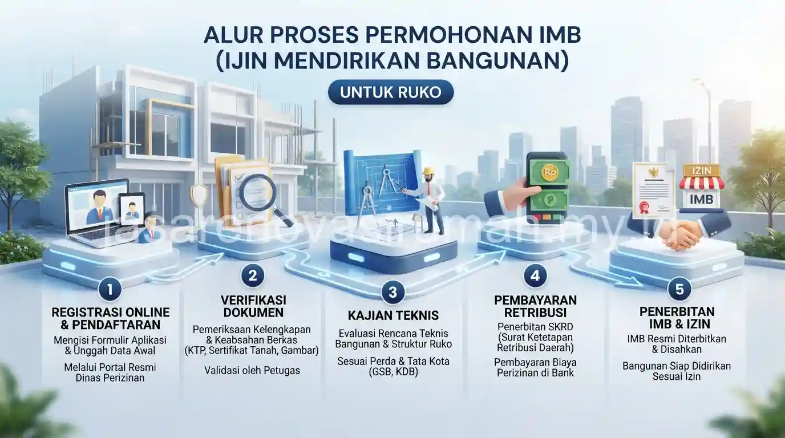

Cara mengurus IMB ruko komersial 2 lantai atau lebih pada dasarnya mengikuti prinsip yang sama dengan IMB rumah tinggal, namun dengan dokumen tambahan seperti kajian struktur dan analisis dampak lalu lintas untuk bangunan berfungsi komersial.
Legalitas ini penting dimiliki sejak awal karena berkaitan langsung dengan keamanan operasional usaha dan proses perizinan usaha lain di kemudian hari, seperti izin gangguan atau izin usaha perdagangan.
Apa Saja Dokumen Tambahan yang Dibutuhkan untuk IMB Ruko Dibanding Rumah Tinggal?
Dokumen tambahan untuk IMB ruko umumnya mencakup kajian struktur bangunan bertingkat dan dokumen terkait fungsi komersial yang tidak diwajibkan pada rumah tinggal biasa.
Berikut kelengkapan dokumen yang biasanya diperlukan untuk IMB ruko komersial:
- Seluruh dokumen dasar seperti pada syarat urus IMB rumah tinggal, termasuk bukti kepemilikan tanah dan gambar rencana bangunan.
- Kajian struktur bangunan bertingkat yang disusun oleh insinyur struktur bersertifikat.
- Dokumen terkait fungsi komersial, seperti rencana penggunaan lantai untuk toko, kantor, atau gudang.
- Surat pernyataan kesesuaian dengan tata ruang wilayah komersial setempat.
Kelengkapan dokumen ini bisa berbeda tergantung kebijakan pemerintah daerah dan zonasi wilayah tempat ruko akan dibangun, sehingga sebaiknya dikonfirmasi langsung ke dinas perizinan setempat sebelum pengajuan.
Bagaimana Alur Pengajuan IMB untuk Ruko 2 Lantai atau Lebih?
Alur pengajuan IMB ruko pada dasarnya mengikuti tahapan serupa dengan rumah tinggal, namun proses verifikasi teknis biasanya lebih ketat karena mempertimbangkan aspek keselamatan bangunan bertingkat untuk fungsi komersial.
Tahapan umum yang biasa dilalui pemohon IMB ruko:
- Menyiapkan dokumen kepemilikan tanah dan gambar rencana bangunan bertingkat.
- Melengkapi kajian struktur dari insinyur bersertifikat untuk bangunan 2 lantai atau lebih.
- Mengajukan berkas ke dinas perizinan bangunan dengan melampirkan dokumen fungsi komersial.
- Menjalani proses verifikasi dan peninjauan lapangan yang biasanya lebih detail dibanding rumah tinggal.
- Menerima dokumen izin setelah seluruh persyaratan teknis dan administratif dinyatakan lengkap.
Durasi proses ini dapat bervariasi tergantung kompleksitas struktur bangunan dan kelengkapan berkas, sehingga sebaiknya diajukan jauh sebelum jadwal pembangunan ruko dimulai agar tidak menghambat rencana operasional usaha.
Apa Risiko Mengoperasikan Ruko Tanpa Izin Bangunan yang Lengkap?
Risiko utama mengoperasikan ruko tanpa izin lengkap adalah potensi sanksi administratif, penyegelan bangunan, hingga kesulitan mengurus izin usaha lain yang biasanya mensyaratkan legalitas bangunan sebagai salah satu dokumen pendukung.
Selain risiko hukum, ruko tanpa izin resmi juga berpotensi mengalami kesulitan saat proses sewa-menyewa dengan penyewa korporat, karena banyak perusahaan mensyaratkan legalitas bangunan yang lengkap sebelum menandatangani kontrak sewa jangka panjang.
Karena itu, pengurusan izin sebaiknya dilakukan sejak tahap perencanaan awal, bersamaan dengan pemilihan jasa kontraktor bangunan yang akan mengerjakan konstruksi ruko.
Kesalahan Umum Saat Mengurus IMB Ruko Komersial
Kesalahan yang paling sering terjadi adalah mengajukan gambar rencana bangunan yang belum mempertimbangkan fungsi komersial secara spesifik, sehingga proses verifikasi menjadi lebih lama karena harus direvisi.
Kesalahan lain yang perlu dihindari:
- Tidak menyertakan kajian struktur dari insinyur bersertifikat untuk bangunan bertingkat.
- Mengabaikan kesesuaian fungsi bangunan dengan zonasi tata ruang wilayah setempat.
- Memulai konstruksi sebelum izin benar-benar terbit, terutama untuk bangunan berskala komersial yang lebih diawasi.

Pada akhirnya, mengurus IMB ruko komersial 2 lantai atau lebih membutuhkan kelengkapan dokumen yang lebih detail dibanding rumah tinggal, namun tetap penting dilakukan sejak awal untuk keamanan legalitas jangka panjang.
Tim kami dapat membantu proses ini secara terintegrasi melalui layanan pengurusan IMB dan RAB, sekaligus mendampingi pelaksanaan konstruksi bersama jasa kontraktor bangunan terpercaya.